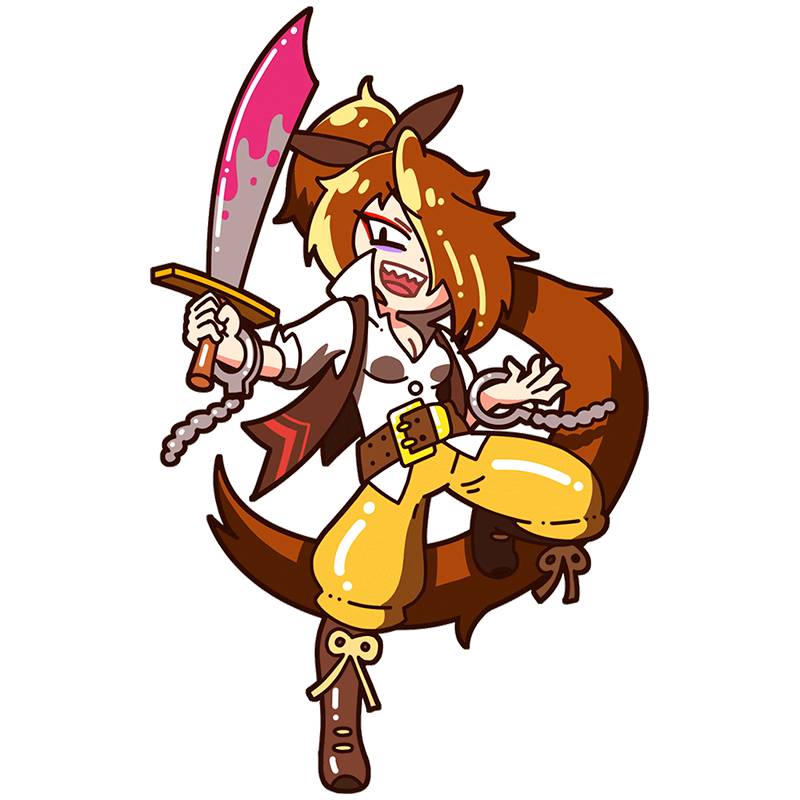

You've got guts!
How dare you interfere with me!
Caravaggio
The most violent artist in art history,
blazing a trail with just a paintbrush
A muse who had a great influence on the Baroque style with her bold use of shadows. She was an incredibly violent person who was constantly fighting, but her talent more than made up for this, and countless muses respected her.
Style
Hometown
Duchy of Milan (present-day Italy)
Classics
"The Calling of Saint Matthew"
"Judith Beheading Holofernes"
"Young Sick Bacchus" etc.
This is the Caravaggio piece!
The Calling of Saint Matthew
The scene depicts Jesus Christ visiting the tax office and converting Matthew, who worked there, into a disciple. The light shining from behind Christ dramatically emphasizes the sacredness of the moment. For a long time, the bearded man seated in the center was identified as Matthew, but in recent years, some scholars have proposed that the man on the left, with his head bowed, is actually Matthew.
Year
1599 - 1600
Medium
Oil on canvas
Dimension
322 cm x 340 cm
Collection
Church of San Luigi dei Francesi
（Italy)
Who is Caravaggio?
Caravaggio
A painter who can be called a pioneer of Baroque art. His religious paintings, rendered vividly through the use of intense chiaroscuro, stood apart from Renaissance art. He was known as a notorious ruffian, and after repeated brawls, he ultimately killed someone. It is said he died of natural causes while traveling to seek a pardon. Despite such an end, he is still regarded as a great painter and spawned many followers. They are called “Caravaggisti,” named after the painter.
Full Name
Michelangelo Merisi da Caravaggio
Born
September 29, 1571
Died
July 18, 1610(aged 38)